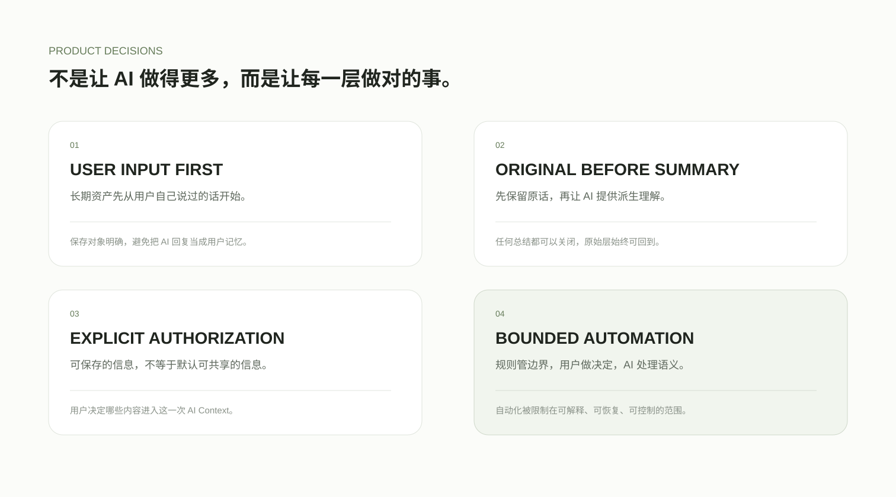

为什么以用户输入为中心？
AI 回复会随模型和场景变化，而用户自己的事实、判断和想法才是更稳定的长期资产。PAIA 首先保存“我说过什么”。
这些判断定义了 PAIA 与普通 AI 历史工具之间的边界。
← 返回产品首页AI 回复会随模型和场景变化，而用户自己的事实、判断和想法才是更稳定的长期资产。PAIA 首先保存“我说过什么”。
总结提高效率，但也会损失语气、过程和不确定性。默认层保持 source-faithful，AI 只提供可关闭的派生理解。
个人信息系统不应默认把整个数据库交给模型。上下文应当最小、可解释、可撤销，并始终服从用户的授权边界。
PAIA 把确定性规则、用户工作和 AI 推理分开：程序负责稳定边界，用户保留最终控制，AI 只处理真正需要语义判断的部分。目标不是“AI 做得越多越好”，而是让每一层承担最适合它的职责。
